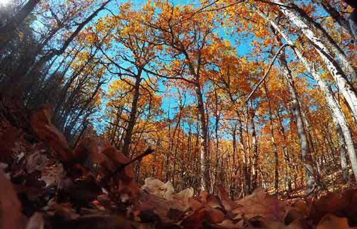

İli: Isparta İlçesi: Eğirdir Köyü: Yukarıgökdere İlan tarihi: 1987 Alanı: 13000 Dekar (Tamamı orman) Kaynak Değerleri Jeolojik Yapı: İkinci zaman ait gri renkli kalker ana kayadan ve bunların ayrışmalarından oluşmuş kolliviyal depolar hâkim bulunmaktadır. Arazi genel hatları ile çok arızalı ve taşlıdır. Fauna: Kurt, çakal, vaşak, yaban domuzu, tavşan, tilki gibi memeliler, Kartal, şahin, doğan, keklik, karatavuk, ardıç kuşu gibi çok bilinen türlerin yanında, SDÜ Orman Fakültesince yapılan bir araştırmaya göre 27 kuş türü tespit edilmiştir
